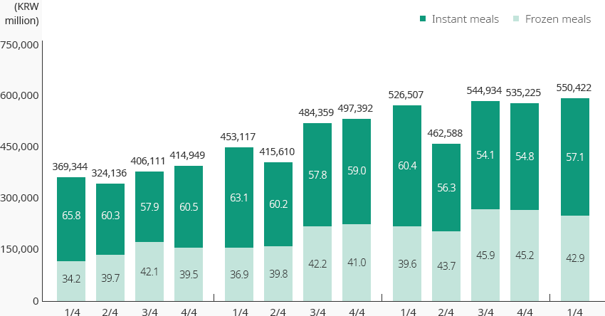
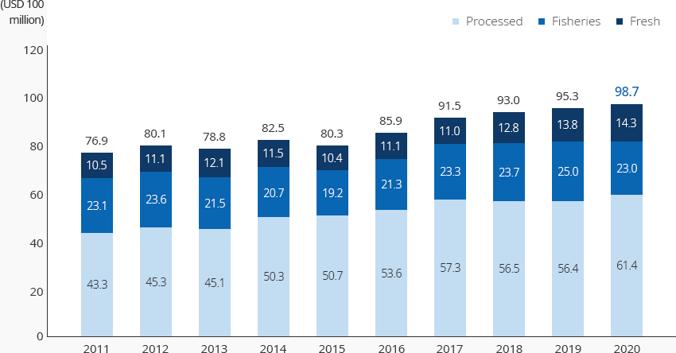
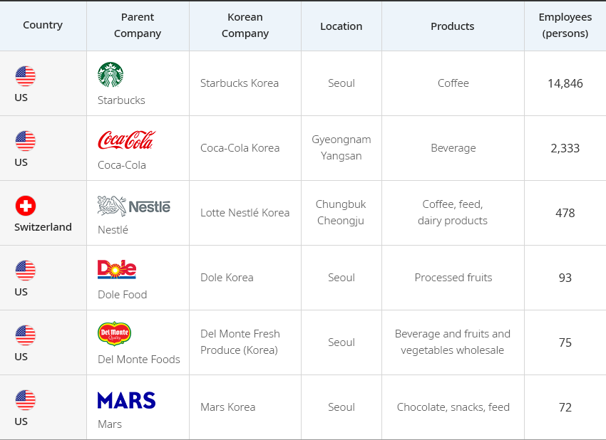
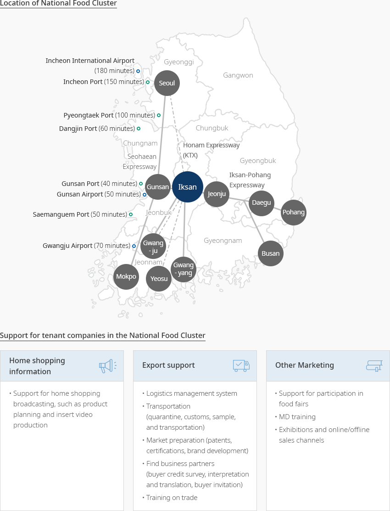

Food
- Home
- Why KOREA
- Industry
- Food
-
Rising Global Status of Korean Processed Food CloseRising Global Status of Korean Processed FoodThe Korean food market was worth USD 128.7 billion as of 2019, which was 1.9% of the global food market.
In response to the recent growth of emerging markets, such as China and ASEAN countries, and the growing
global demand for Korean processed foods, exports have been rapidly and continuously growing.Based on high demand for Korean processed foods, centered on Southeast Asian and greater China markets, and the country’s geopolitical location, the Korean food industry has been continuously expanding while gradually making a transition from domestic-centered to an expansion of exports.Active overseas expansion and increases exports, an export structure centered on high value-added products,
the expansion of free trade agreements, and active cooperation with foreign companies contributed to
strengthening the foundation for further growth.The food industry is actively responding to demographic changes, such as an increase in single-person households,
and developing new products to meet diverse demands.
With the spread of non-face-to-face distribution channels in the wake of COVID-19,
home meal replacement (HMR) has established itself as a new growth engine in the food industry."Sales of HMR by Quarter"(Unit: KRW million, %)Sales of HMR by Quarter Year, Total Year Instant meals Frozen meals Total 1/4 65.8 34.2 369,344 2/4 60.3 39.7 324,136 3/4 57.9 42.1 406,111 4/4 60.5 39.5 414,949 1/4 63.1 36.9 453,117 2/4 60.2 39.8 415,610 3/4 57.8 42.2 484,359 4/4 59.0 41.0 497,392 1/4 60.4 39.6 526,507 2/4 56.3 43.7 462,588 3/4 54.1 45.9 544,934 4/4 54.8 45.2 535,225 1/4 57.1 42.9 550,422  ※ Source: Ministry of Agriculture, Food and Rural Affairs and Korea Agro-Fisheries and Food Trade Corporation (2020), 2019 Processed Food Market Segmentation – Instant Food Market Status
※ Source: Ministry of Agriculture, Food and Rural Affairs and Korea Agro-Fisheries and Food Trade Corporation (2020), 2019 Processed Food Market Segmentation – Instant Food Market Status -
Stable Growth of the Food Industry OpenStable Growth of the Food IndustryThe Korean food industry (food & beverage) has continued to grow since the 1970s, thanks to economic growth and expansion of household consumption expenditures. As of 2019, the production scale of the Korean food industry was KRW 96.5 trillion. The industry has grown at an average annual rate of 5.9% since 2007, which is higher compared to the manufacturing industry (4.2%). The share of the food industry in the manufacturing industry has been steadily increasing. The number of businesses, production amount, and added value all increased compared to 2007."HMR Sales by Quarter"(Unit: units, KRW billion, %)
HMR Sales by Quarter 2007, 2016, 2019, CAGR(‘07→’19) 2007 2016 2019 CAGR
(‘07→’19)Companies Units 4,257 5,274 5,797 2.6% Compared to the manufacturing industry(%) 6.9 7.7 8.3 Production amount KRW billion 48,727 86,682 96,500 5.9 Compared to the manufacturing industry(%) 5.1 6.1 6.2 Added value KRW billion 19,473 32,125 35,904 5.2 Compared to the manufacturing industry(%) 5.9 6.5 6.4 ※ Source: Statistics Korea, Survey on the Mining and Manufacturing IndustriesAs of 2020, exports of Korean processed food amounted to USD 6.14 billion, accounting for 62.2% of the total agricultural and fishery food exports."Processed Food Export Trends"Processed Food Export Trends Year, Processed, Fisheries, Fresh Category 2011 2012 2013 2014 2015 2016 2017 2018 2019 2020 Processed 43.3 45.4 45.2 50.3 50.7 53.6 57.3 56.5 56.4 61.4 Fisheries 23.1 23.6 21.5 20.7 19.2 21.3 23.3 23.7 25.0 23.0 Fresh 10.5 11.1 12.1 11.5 10.4 11.1 11.0 12.8 13.8 14.3 Total 76.9 80.1 78.8 82.5 80.3 85.9 91.5 93.0 95.3 98.7
※ Source: Ministry of Agriculture, Food and Rural Affairs (2020), Trends and Statistics of Export/Import of Agriculture, Forestry, and Fisheries FoodWhile demand for processed Korean food in major export markets, such as China, the US, and ASEAN is strong, an increase in demand for convenient food caused by COVID-19 has pushed exports upward (average annual increase of 6.8% since 2010). Global demand for sauce products, as well as traditionally popular products, such as confectionery and noodles, are increasing, and consequently, the overall exports of processed food are increasing." Processed Food Export Trends by Item "(Unit : USD 1,000, %)Processed Food Export Trends by Item 2019, 2020, Increase or Decrease 2019 2020 Increase or Decrease Confectionery 440,895 518,713 17.6 Noodles 612,041 792,255 29.4 Beverage 421,997 410,420 △ 2.7 Liquor 383,739 323,337 △ 15.7 Coffee 274,320 278,561 1.5 Sauce 255,872 318,762 24.6 ※ Source: Ministry of Agriculture, Food and Rural Affairs (2020), Trends and Statistics of Export/Import of Agriculture, Forestry, and Fisheries Food -
Excellent Test Bed For the Global Market OpenExcellent Test Bed For the Global MarketStarbucks Korea is a joint venture between Starbucks and E-Mart (Starbucks 32.5%, E-Mart 67.5%). It is a defining success story among the countries where Starbucks has expanded to. After opening its first store near Ewha Womans University in 1999, Starbucks Korea had achieved more than KRW 1 trillion in sales by 2016, and sales and profit levels in 2018 increased by 20% and 24.8%, respectively, compared to 2017.Nestlé Korea, since entering Korea as a joint venture in 1979, has been leading the food market trend by actively localizing globally popular products, such as Tasters' Choice, Nescafe, Coffee Mate, and Nesquik, to suit Korean tastes.Nestlé provides customized products by identifying the tastes and characteristics of local consumers through field research and close cooperation with the R&D team at its headquarters. For active localization, Nestlé hires local employees and promotes customized marketing for the local market, and differentiated marketing for local holiday culture. The company actively collaborates with companies that have built strong distribution networks in Korea, such as Nongshim, Coca-Cola Korea, Doosan, and Namyang Dairy Products, to explore sales channels and secure distribution networks.
Global Food Companies to Enter Korea Country, Parent Company, Korean Company, Location, Products, Employees (persons) Country Parent Company Korean Company Location Products Employees (persons) US Starbucks Starbucks Korea Seoul Coffee 14,846 US Coca-Cola Coca-Cola Korea Gyeongnam Yangsan Beverage 2,333 Switzerland Nestlé Lotte Nestlé Korea Chungbuk Cheongju Coffee, feed, dairy products 478 US Dole Food Dole Korea Seoul Processed fruits 93 US Del Monte Foods Del Monte Fresh Produce (Korea) Seoul Beverage and fruits and vegetables wholesale 75 US Mars Mars Korea Seoul Chocolate, snacks, feed 72
※ Source: Korea Agro-Fisheries and Food Trade Corporation, Food Industry Statistical Information (aT FIS)
※ Note: The number of Korean employees is as of 2018. -
Advancing the Food Industry Focusing on Promising Fields OpenAdvancing the Food Industry Focusing on Promising FieldsThe Ministry of Agriculture, Food and Rural Affairs of the Republic of Korea has created an innovative ecosystem for the food industry through the 3rd Food Industry Promotion Basic Plan. Five policy areas and specific tasks were selected to promote a leap forward into the future industry. In order to preemptively nurture promising products, such as HMR, aging-friendly food, and functional food, and vitalize food industry clusters, the ministry will attract over 160 companies by 2022 and strengthen support for those companies, such as settlement and technical difficulties.R&D based innovative food companies are selected for support, and additional technologies subject to tax reduction or exemption are discovered, with an aim to vitalize private R&D investment. The National Food Cluster Support Center is supporting resources necessary for early settlement of resident companies."Subsidy Support for National Food Clusters"
Subsidy Support for National Food Clusters Category, Support Category Support Investment subsidy Large-scale investment Jeonbuk: Up to KRW 10 billion within 5% of the investment amount Iksan : Up to KRW 10 billion within 5% of the investment amount General investment Jeonbuk : Up to KRW 5 billion within 5% of the investment amount exceeding KRW 10 billion Iksan : Up to KRW 5 billion within 5% of the investment amount exceeding KRW 10 billion Employment subsidy Jeonbuk KRW 500,000 per person per month, 6 month range, KRW 500 million per company Iksan KRW 600,000 per person per month, 6 month range, KRW 200 million per company Education and training subsidy Jeonbuk KRW 100,000 to 500,000 per person, 6 month range, KRW 500 million per company Iksan KRW 100,000 per person, per month for up to 3 years Settlement subsidy Jeonbuk KRW 100,000 per person, per month for up to 3 years Logistics center support Iksan KRW 1 billion per company within 5% of the investment amount exceeding KRW 300 billion SMEs support Facility/working funds (Jeonbuk), market development/marketing activity expenses (Iksan) ※ Source: National Food Cluster website -
National level Food Industry Clusters OpenNational level Food Industry ClustersFoodpolis is a national food cluster created by the Ministry of Agriculture, Food and Rural Affairs, Jeollabuk-do, and Iksan. This core infrastructure for food industry promotion is located in Iksan, Jeollabuk-do.
- Rediscovery of the industrial value of the food industry and preemptive response to the rapidly growing food market in Northeast Asia (December 2017)
- Provide the best transport, logistics, and water with the goal of creating a business-friendly global food industrial complex; smart food industrial complex based on IT and green energy
"Major Logistics Sites and Ports in Korea"Major Logistics Sites and Ports in Korea- Incheon International Airport (180 minutes)
- Incheon Port (150 minutes)
- Pyeongtaek Port(100minutes)
- Dangjin Port(60minutes)
- Gunsan Port(40minutes)
- Gunsan Airport(50minutes)
- Saemanguem Port(50minutes)
- Gwangju Airport(70minutes)
Support for tenant companies in the National Food Cluster-
Home shopping information
- Support for home shopping broadcasting, such as product planning and insert video production
-
Export support
- Logistics management system
- Transportation (quarantine, customs, sample, and transportation)
- Market preparation (patents, certifications, brand development)
- Find business partners (buyer credit survey, interpretation and translation, buyer invitation)
- Training on trade
-
Other Marketing
- Support for participation in food fairs
- MD training
- Exhibitions and online/offline sales channels
※ Source: National Food Cluster website
※ Detailed conditions, such as support conditions, can be verified with PMs in charge of consumer goods industry."National Food Cluster Land Plan"National Food Cluster Land Plan Category, Area, Number of Companies, Possible Businesses Category Area Number of Companies Possible Businesses Industrial facilities Strategic food zone (intensive development) 350,000㎡ 50 - High-tech fusion food (functional, bio), fermented food
- Food ingredients (food additives, sugar, starch), convenience foods, processed rice foods, preference foods
Global food company zone
(foreign investment zone)450,000㎡ 30 - Foreign-invested companies
Logistics distribution zone 100,000㎡ 5 - Logistics and delivery
- Distribution (transportation)
- Storage (low temperature and frozen storage)
General food zone
(specialized zone for local food)500,000㎡ 50 - Baking, confectionery, noodles, beverages, general alcoholic beverages
- Meat processing, dairy processing, seafood processing
Food related industry zone 100,000 ㎡ 15 - Packaging and containers
- Food and beverage processing machinery
- Condiments and food additive logistics
Food R&D area 540,000㎡ 10 - Private research institutes, companies, research institutes affiliated with universities
Business support facility area 940,000㎡ 6 - Food functionality, safety, packaging center
- Pilot plant, rental plant, support center
Theme park area 244,000㎡ - - Parks, global theme parks, reservoirs
Other areas, such as relocation complex 413,000㎡ - - Public facilities, such as residential area and wastewater treatment plant
- Roads, green areas
※ Source: National Food Cluster Comprehensive Plan


Invest KOREA
Recommendation on Locations
Industrial complex information
[Jeollabuk-do Iksan City] National Food Cluster (Small and Medium
Cooperation for Foreigners)
Click [Go to Detailed Information] to go to the relevant information screen of
Smart K-Factory service of Industrial Complex Corporation.
-
Complex nameNational Food Cluster (Small and Medium Cooperation for Foreigners)
-
Initial designation date2015.10.12
-
Designated area(m2)116,000
-
ManagementKorea Industrial Complex Corporation
-
Nearby RailwayIksan Station
-
Distance from station(km)16
-
Nearby AirportGunsan Airport
-
Distance from airport(km)59
-
Industrial water Supply capacity(ton/day)-
-
Affiliation local governmentJeollabuk-do Iksan City
-
Population283,496
Industrial complex information
[Incheon Metropolitan City Seo-gu] I-Food Park
Click [Go to Detailed Information] to go to the relevant information screen of
Smart K-Factory service of Industrial Complex Corporation.
-
Complex nameI-Food Park
-
Initial designation date2017.06.05
-
Designated area(m2)281,471
-
ManagementIncheon Metropolitan City Office
-
Nearby RailwayBupyeong Station
-
Distance from station(km)22
-
Nearby AirportGimpo International Airport
-
Distance from airport(km)22
-
Industrial water Supply capacity(ton/day)1809(㎥/day)
-
Affiliation local governmentIncheon Metropolitan City Seo-gu
-
Population2,943,491
Industrial complex information
[Jeollanam-do Yeongam County] Yeongam Specialized Agricultural Industrial
Complex
Click [Go to Detailed Information] to go to the relevant information screen of
Smart K-Factory service of Industrial Complex Corporation.
-
Complex nameYeongam Specialized Agricultural Industrial Complex
-
Initial designation date2014.02.20
-
Designated area(m2)116,307
-
ManagementJeollanam-do Yeongam County
-
Nearby RailwayImseong-ri Statioln
-
Distance from station(km)39
-
Nearby AirportGwangju Airport
-
Distance from airport(km)45
-
Industrial water Supply capacity(ton/day)1,070(㎥/day)
-
Affiliation local governmentJeollanam-do Yeongam County
-
Population54,045
Industrial complex information
[Jeollanam-do Jangheung County] Jangheung Bio Food Industry Complex
[formerly: Haedang]
Click [Go to Detailed Information] to go to the relevant information screen of
Smart K-Factory service of Industrial Complex Corporation.
-
Complex nameJangheung Bio Food Industry Complex [formerly: Haedang]
-
Initial designation date2008.12.12
-
Designated area(m2)2,892,052
-
ManagementJeollanam-do Jangheung County
-
Nearby RailwayBoseong Station
-
Distance from station(km)22
-
Nearby AirportGwangju Airport
-
Distance from airport(km)69
-
Industrial water Supply capacity(ton/day)9,047(㎥/day)
-
Affiliation local governmentJeollanam-do Jangheung County
-
Population37,909
Industrial complex information
[Gangwon-do SokchoCity] Daepo 1st Agricultural Industrial Complex
Click [Go to Detailed Information] to go to the relevant information screen of
Smart K-Factory service of Industrial Complex Corporation.
-
Complex nameDaepo 1st Agricultural Industrial Complex
-
Initial designation date1989.12.30
-
Designated area(m2)177,280
-
ManagementGangwon-do SokchoCity
-
Nearby RailwayGangneung Station
-
Distance from station(km)70
-
Nearby AirportYangyang International Airport
-
Distance from airport(km)17
-
Industrial water Supply capacity(ton/day)2441(㎥/day)
-
Affiliation local governmentGangwon-do SokchoCity
-
Population82,343
Industrial complex information
[Chungcheongbuk-do Jincheon County] K-Food Valley [formerly:
Songdu]
Click [Go to Detailed Information] to go to the relevant information screen of
Smart K-Factory service of Industrial Complex Corporation.
-
Complex nameK-Food Valley [formerly: Songdu]
-
Initial designation date2016.07.08
-
Designated area(m2)831,966
-
ManagementChungcheongbuk-do Jincheon County
-
Nearby RailwayJeungpyeong Station
-
Distance from station(km)22
-
Nearby AirportCheongju International Airport
-
Distance from airport(km)27
-
Industrial water Supply capacity(ton/day)5,782(㎥/day)
-
Affiliation local governmentChungcheongbuk-do Jincheon County
-
Population81,949